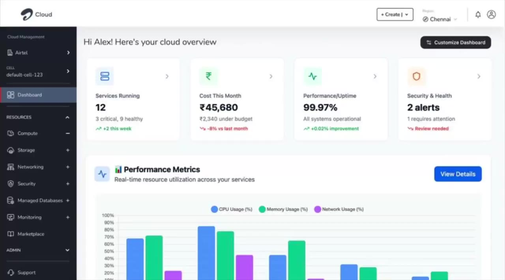

Sunny Kumar · Senior Lead Product Designer, Airtel
I design enterprise platforms that make complex systems easier to operate.
Fifteen years in design, the last three leading platform work at Airtel. I start from definitions and evidence, align product and engineering teams I don't manage, and design AI features that keep a person in control.
Early outcomes from platforms I led design for
- 15 Crmessages sent through UCLM, Airtel's unified campaign platform, in its first month
- 30+ → <5 mintime to build a campaign, old campaign manager vs UCLM: 80%+ faster
- ₹7 Crinitial revenue for the UCLM SaaS platform
- KMSmy key-management prototype, built into live Airtel Cloud
Product results, delivered with product and engineering teams. Each case study separates my part from the team's.
Selected work
Campaigns, now with a brain
Five campaign tools became one platform, UCLM. Then we added AI that plans campaigns while a person approves every one.
Read case study
 How the AI modules feed one human-reviewed plan
How the AI modules feed one human-reviewed plan
Cloud, minus the chaos
An enterprise cloud console built by separate teams, made to feel like one product, without authority over any of them.
Read case study

Proposed Cloud overview dashboard
Access, without the headache
Identity and access management for Airtel Cloud, designed from definitions up with no PRD to start from.
Read case study
Side project
AI Signal, a free daily brief on AI for designers. Built and shipped on my own, with AI doing the heavy lifting and editorial rules as the design.